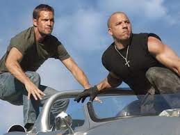

First Blog Post
Posted on October 2, 2023 by Dejean Whyte
My favourite movie series is Fast and the Furious. I have watched every single
one of the movies.
I truly enjoyed all the driving scenes and outstanding acting from
Vin Diesel and the late Paul Walker.

Second Blog Post
Posted on October 2, 2023 by Dejean Whyte
A network is a group of two or more computers or other electronic devices that
are interconnected for the purpose of exchanging data and sharing resources.
A network engineer is a technology professional who has the necessary skills to
plan, implement and oversee the computer networks that support in-house voice,
data, video and wireless network services.